Córtex Estudos · 4º Semestre · Anatomia Topográfica · Aula de 16/10
Peritônio
A serosa do abdome e a "verdadeira" cavidade: lâminas parietal e visceral, o grande saco fechado no homem e aberto na mulher, quem é peritonizado e quem fica fora, mesos, omentos e ligamentos, as funções (do atrito à diálise peritoneal), a bolsa omental atrás do estômago, o forame de Winslow e a manobra de Pringle — e, só nos slides, os recessos peritoneais.
1 · Peritônio: uma serosa como a pleura e o pericárdio
- O peritônio é uma MEMBRANA SEROSA, lisa e brilhante — a mesma natureza da pleura e do pericárdio seroso. Como toda serosa, tem duas lâminas:
As duas lâminas e o espaço entre elas
- 1PERITÔNIO PARIETAL — reveste a parede do abdome, desde o diafragma (em cima) até o assoalho pélvico / diafragma pélvico (embaixo).
- 2CAVIDADE PERITONEAL — o espaço ENTRE as duas lâminas, com uma fina película de líquido seroso. É a verdadeira cavidade do abdome.
- 3PERITÔNIO VISCERAL — o parietal se reflete em direção ao órgão e o reveste, formando a sua túnica externa (serosa).
- 🎯 "Não existe, na realidade, cavidade abdominal": a cavidade abdominal só apareceria se tirássemos todos os órgãos. A cavidade de verdade é a PERITONEAL, delimitada pelas lâminas parietal e visceral.
- O visceral reveste alguns órgãos — não todos. Daí a classificação em peritonizados, parcialmente peritonizados e extraperitoneais (tópico 3).
🔗 Conexão
É o mesmo desenho da pleura e do pericárdio seroso: lâmina parietal + lâmina visceral, e a cavidade (onde se acumulam os derrames) entre elas.
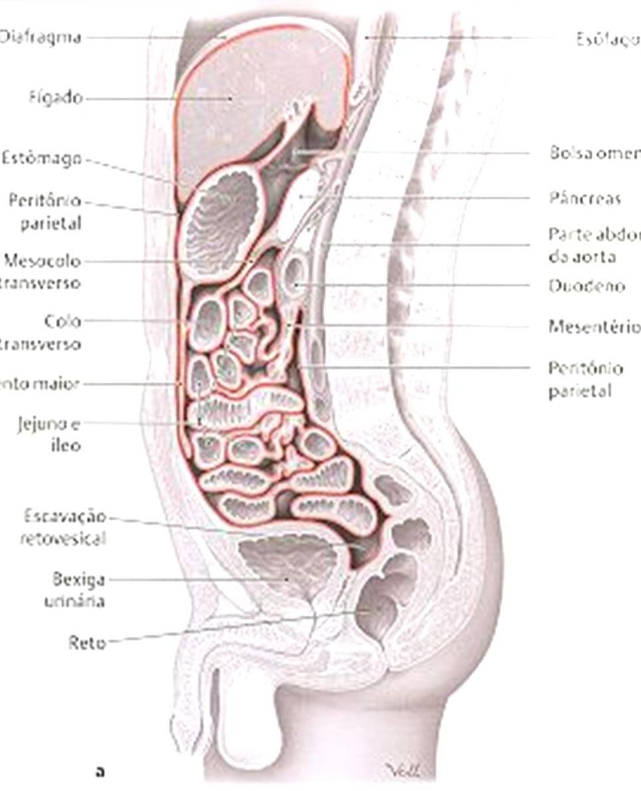
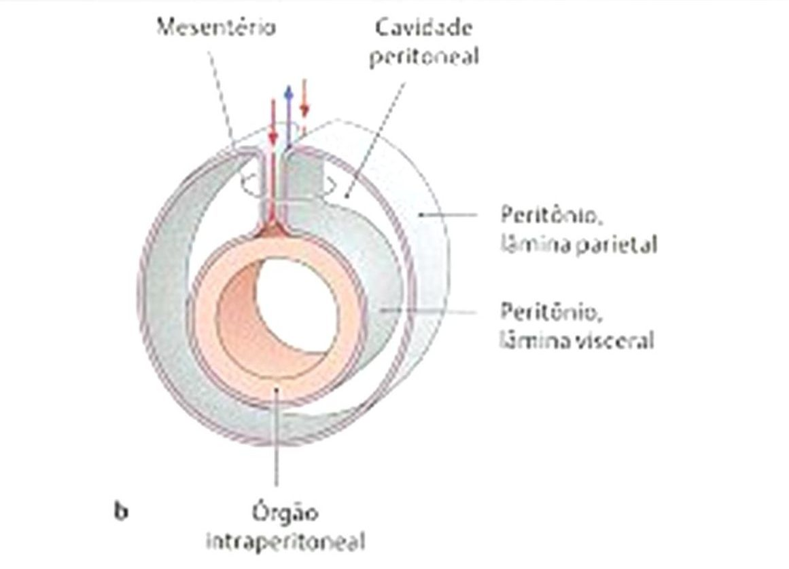
2 · O grande saco: fechado no homem, aberto na mulher
- A cavidade peritoneal é um GRANDE SACO.
- 🎯 HOMEM: saco completamente FECHADO.
- 🎯 MULHER: saco ABERTO — as tubas uterinas abrem-se (pelas fímbrias, no óstio abdominal) para dentro da cavidade peritoneal. O trajeto cavidade peritoneal → tuba → útero (corpo, istmo, colo) → vagina → meio exterior comunica o interior do abdome com o exterior: "pode sair coisa, pode entrar coisa".
- Consequência clínica dita na aula: o risco de infecção da cavidade peritoneal é maior na mulher, justamente por essa comunicação.
🎯 Não é "furo no peritônio"
Na dúvida levantada em aula: a tuba é revestida pelo peritônio; a comunicação existe porque o óstio da tuba é aberto dentro da cavidade (é por onde o óvulo cai na tuba) — o meio externo chega pelo canal genital.
3 · Peritonizados, parcialmente peritonizados e extraperitoneais
- ÓRGÃO PERITONIZADO: totalmente revestido pelo peritônio visceral.
- PARCIALMENTE PERITONIZADO: revestido só em algumas faces. Exemplo-modelo da aula: COLO ASCENDENTE e COLO DESCENDENTE — peritônio na face medial, anterior e lateral; não há peritônio POSTERIOR.
- EXTRAPERITONEAL: não revestido; está fora da cavidade peritoneal. Quando fica atrás dela (delimitado pelo peritônio parietal posterior), é RETROPERITONEAL.
| Revestimento | Órgãos citados na aula |
|---|---|
| PERITONIZADOS (totalmente) | jejuno e íleo · ceco · colo sigmoide · baço · cauda do pâncreas · vesícula biliar · tuba uterina e ovário (na aula) · colo transverso (com seu mesocolo) |
| PARCIALMENTE | colo ascendente e colo descendente (sem face posterior) · 1ª parte do duodeno (só na frente) · fígado (tem a área nua, em cima, sem peritônio) · terço superior do reto (o peritônio passa na frente) |
| EXTRAPERITONEAIS (retroperitoneais / pélvicos) | 2ª, 3ª e 4ª partes do duodeno · cabeça e corpo do pâncreas · reto do terço médio para baixo · bexiga · útero (o peritônio passa por cima) · ureteres · aorta e veia cava inferior · artérias e veias renais · vasos ilíacos · vasos gonadais (ovarianos/testiculares) |
🎯 Duodeno e pâncreas — o raciocínio da aula
A 1ª parte do duodeno ainda é revestida (na frente); depois o duodeno "mergulha" para trás e fica extraperitoneal — e a cabeça do pâncreas, encaixada na curva do duodeno, também. A cauda, mais anteriorizada e junto ao baço, é peritonizada.
⚠️ Divergências na classificação
Ovário: na aula, "totalmente revestido pelo peritônio". Na literatura, o ovário é intraperitoneal e suspenso pelo mesovário, mas sua superfície é coberta por um epitélio próprio (epitélio superficial), não pelo peritônio visceral.
Útero: na aula, "o peritônio passa em cima, mas não reveste". Na literatura, fundo e corpo são cobertos por peritônio (o perimétrio, sua serosa); o colo não. O útero costuma ser descrito como subperitoneal, mas com revestimento parcial.
Vesícula biliar: na aula, peritonizada. Na literatura, o peritônio cobre o fundo e a face inferior; a face superior adere ao leito hepático sem peritônio.
Reto: na aula, só o terço superior tem peritônio (na frente) e "do terço médio para baixo é extraperitoneal". Na literatura: terço superior coberto na frente e nos lados, terço médio só na frente, terço inferior sem peritônio.
Duodeno: na literatura, só os ~2 cm iniciais da 1ª parte (a ampola) são intraperitoneais e móveis; o restante da 1ª parte já é retroperitoneal.
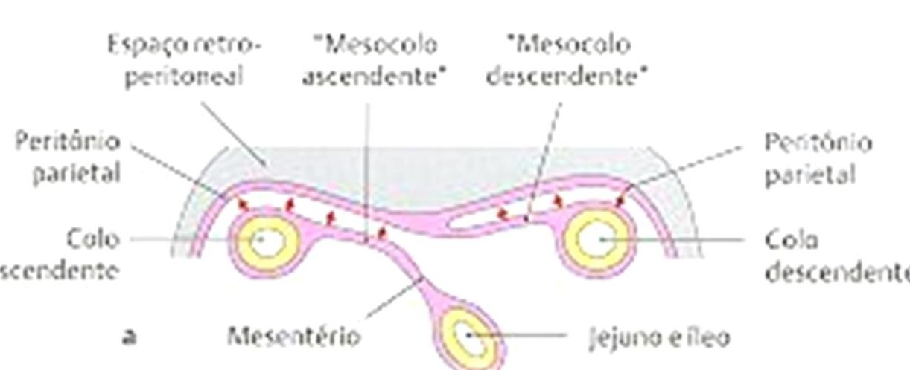
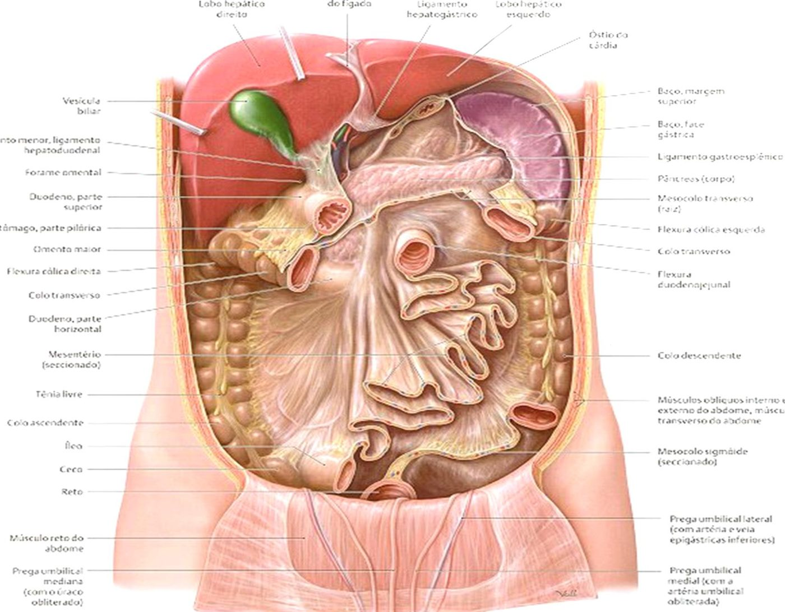
4 · Mesos: a prega que prende a víscera à parede
- Quando o peritônio parietal se reflete em direção a uma víscera para formar o visceral, essa reflexão é o MESO: uma prega de peritônio que sustenta, que PRENDE A VÍSCERA À PAREDE.
- 🎯 Nomes que a aula cobrou:
- MESENTÉRIO ("entérico" = intestino): sustenta o intestino delgado — jejuno e íleo. Tem uma raiz na parede posterior e pode ser mais longo ou mais curto.
- MESOCOLO TRANSVERSO: prende o colo transverso à parede.
- MESOCOLO SIGMOIDE (mesossigmoide): sustenta o colo sigmoide.
- MESOAPÊNDICE: sustenta o apêndice cecal (vermiforme).
- Os vasos chegam pelo meso: a artéria mesentérica superior e seus ramos (jejunais, ileais, cólicas) correm entre as lâminas do mesentério; na dissecção, é preciso abrir o meso para encontrá-los. O mesmo vale para os ramos da mesentérica inferior no mesocolo sigmoide.
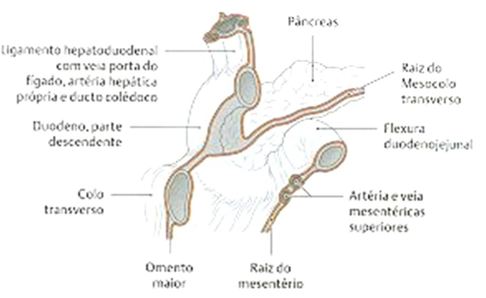
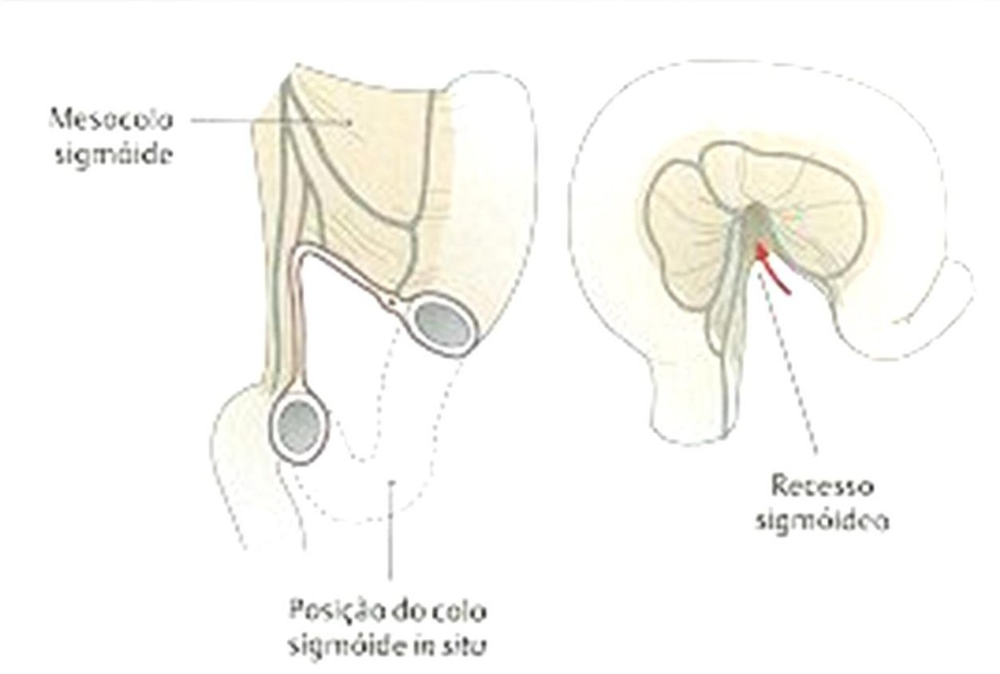
5 · Líquido peritoneal e as funções do peritônio
- Entre as lâminas há uma serosidade (líquido seroso). Quando esse líquido aumenta — por transudação dos vasos — temos a ASCITE, a "barriga d'água" (ex.: cirrose, esquistossomose).
| Função (slide + fala) | Como a aula explicou |
|---|---|
| Diminui o atrito | as alças se movem (peristaltismo) e roçam umas nas outras; a serosa lisa permite o deslizamento sem atrito. |
| Resistência às infecções | o líquido peritoneal contém células de defesa. |
| Reserva de gordura | principalmente no OMENTO MAIOR: espesso no obeso, fininho no sarcopênico — reflete a gordura visceral. |
| Bloqueia processos infecciosos | o omento maior (parte livre, "avental") se dirige ao foco e o envolve — na apendicite, ao abrir, encontra-se o omento "bloqueando" o apêndice e evitando que o pus se espalhe. |
| Bloqueia perfurações | o omento "tampona" a úlcera gástrica perfurada ou o divertículo perfurado, evitando que o conteúdo caia na cavidade e cause PERITONITE. |
| Via de troca: introduzir drogas e retirar substâncias tóxicas | "talvez o mais importante": a DIÁLISE PERITONEAL — e também a infusão de antibióticos na cavidade. |
🩺 Diálise peritoneal
No doente renal crônico (o rim não filtra), acumulam-se íons e escórias (potássio, ureia, creatinina). Coloca-se um cateter com uma ponta dentro da cavidade peritoneal e outra fora; injeta-se solução (soro), que entra em contato com o peritônio e "puxa" esses solutos, e depois aspira-se/drena-se o líquido — uma "lavagem" da cavidade. Pode ser feita em casa, desde que haja um ambiente asséptico, isolado — o que a maioria da população não tem; por isso a maior parte faz hemodiálise (por fístula arteriovenosa ou cateter).
⚠️ Divergências
Movimento do omento: na aula, o omento "se movimenta" até o foco por ter inervação simpática e parassimpática. Na literatura, o omento não tem motilidade própria: chega ao foco levado pelo peristaltismo e pelos movimentos do corpo e adere por causa do exsudato fibrinoso da inflamação — o efeito "policial do abdome" é real, o mecanismo é passivo.
Gravidade da peritonite: na aula, "leva a óbito na maioria das vezes". Na literatura, a peritonite secundária é grave e tem mortalidade relevante, sobretudo com sepse, mas com cirurgia e antibiótico a maioria sobrevive.
6 · Omentos menor e maior
- MESO = parede → víscera. OMENTO = prega peritoneal que liga VÍSCERA → VÍSCERA. Nome antigo: epíploo (epíploo menor, epíploo maior).
- 🎯 OMENTO MENOR: duas lâminas de peritônio do FÍGADO → PEQUENA CURVATURA DO ESTÔMAGO (e, mais lateral, até o duodeno — o ligamento hepatoduodenal).
- 🎯 OMENTO MAIOR: duas lâminas que passam à frente do estômago e duas atrás dele descem em direção ao colo transverso; unem-se e continuam para baixo como a PARTE LIVRE — o "avental" que se move na cavidade. Parte fixa: estômago → colo transverso. Parte livre: a que desce e cobre as alças.
- Ao abrir a cavidade (laparotomia — mediana, paramediana, pararretal…), o omento maior é o que primeiro aparece, cobrindo as alças.
🎯 Laparotomia ou celiotomia?
"Tomia" = cortar; "laparo" = flanco. O termo mais preciso para abrir a cavidade peritoneal seria CELIOTOMIA — abertura da cavidade celômica, que é a cavidade peritoneal.
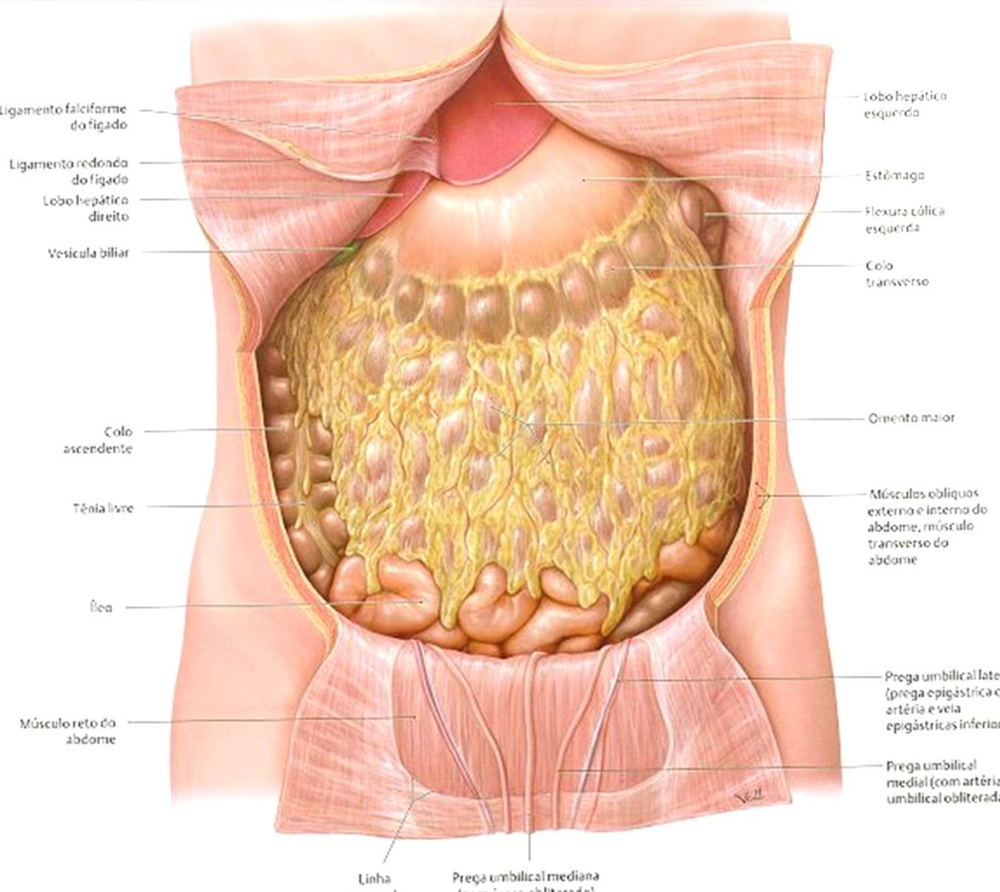
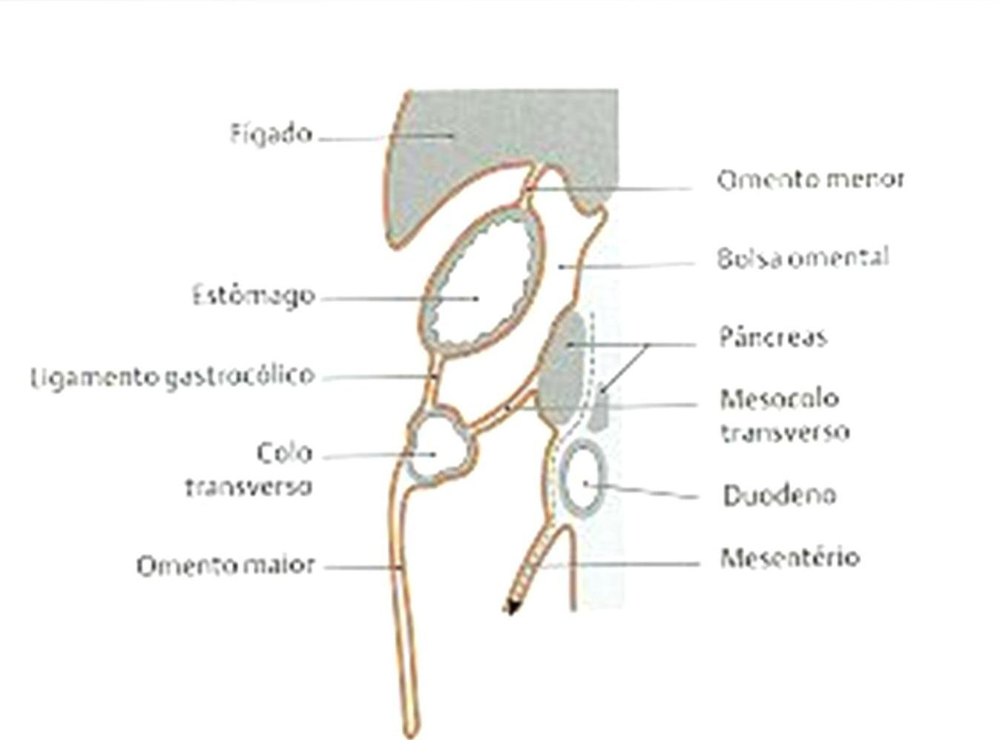
7 · Ligamentos e pregas peritoneais
- LIGAMENTO (no slide): condensação de peritônio de um órgão a outro.
- 🎯 LIGAMENTO HEPATODUODENAL: do fígado à 1ª parte do duodeno; é a parte densa/lateral do omento menor. O mais importante é o conteúdo: o PEDÍCULO HEPÁTICO = veia porta + artéria hepática própria + vias biliares (colédoco).
- LIGAMENTO GASTROCÓLICO: do estômago ao colo — no slide, "à flexura esquerda do colo".
- LIGAMENTO FRENOCÓLICO: do diafragma à flexura cólica esquerda. Na aula, "importante porque divide o andar superior do andar inferior da cavidade peritoneal" (tema da aula seguinte).
- 🎯 LIGAMENTO FALCIFORME: da parede anterior SUPRAUMBILICAL à face diafragmática do fígado; divide o fígado em lobos direito e esquerdo e desce até a cicatriz umbilical. É a única prega supraumbilical. Na sua margem livre: o LIGAMENTO REDONDO DO FÍGADO = VEIA UMBILICAL OBLITERADA.
- PREGAS PERITONEAIS: o peritônio pode ser levantado por estruturas subjacentes — abaixo do umbigo, as pregas umbilicais MEDIANA, MEDIAIS e LATERAIS.
⚠️ Divergências
Gastrocólico: no slide, "do estômago à flexura esquerda do colo". Na literatura, é a porção do omento maior entre a curvatura maior do estômago e o colo transverso (em toda a extensão, não só a flexura).
Frenocólico: na aula, divide o andar superior do inferior. Na literatura, quem separa os compartimentos supramesocólico e inframesocólico é o MESOCOLO TRANSVERSO; o frenocólico sustenta a flexura esquerda e funciona como barreira parcial entre a goteira paracólica esquerda e o espaço subfrênico esquerdo.
🔗 Conexão
O conteúdo de cada prega umbilical (úraco, artérias umbilicais obliteradas, vasos epigástricos inferiores) e as fossas entre elas foram vistos na aula de parede abdominal.
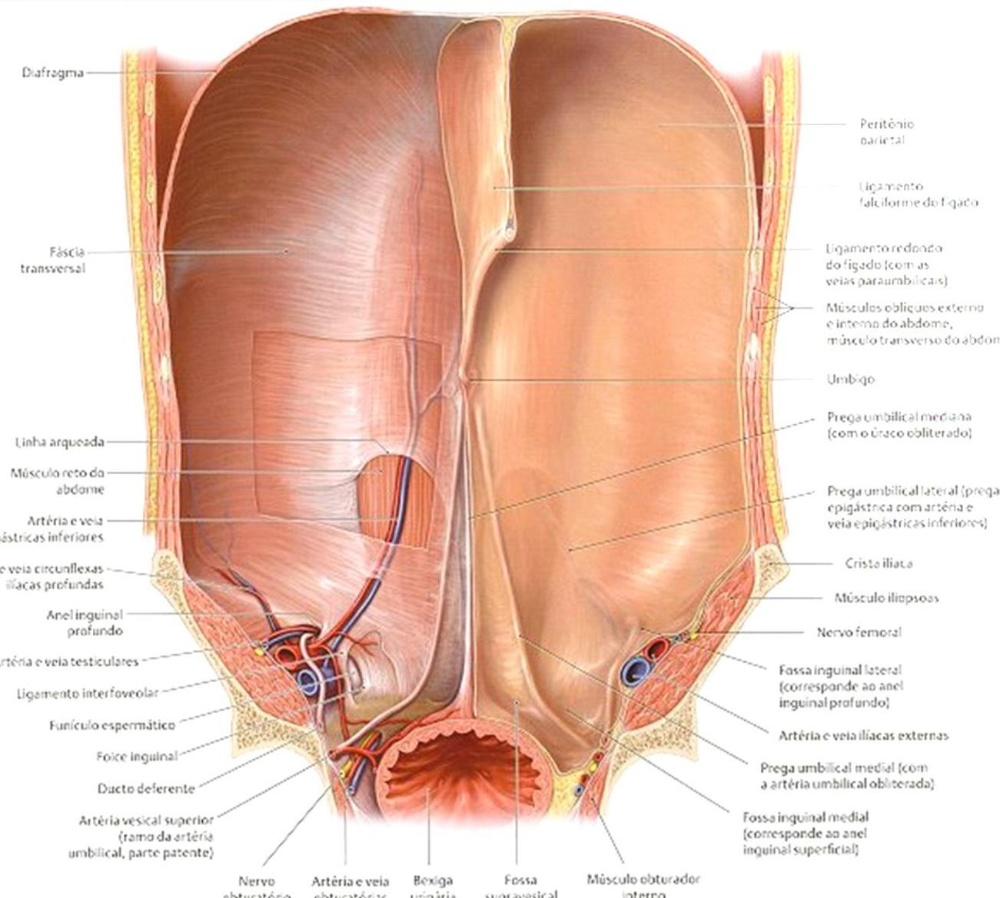
8 · Bolsa omental: o pequeno saco
- Atrás do estômago forma-se outro espaço: a BOLSA OMENTAL — o PEQUENO SACO dentro do GRANDE SACO (a cavidade peritoneal). Nome antigo: RETROCAVIDADE DOS EPÍPLOOS ("atrás dos omentos menor e maior").
- Slide: espaço irregular posterior ao estômago e ao omento menor.
| Parede | Na fala | No slide |
|---|---|---|
| ANTERIOR | omento menor, estômago (sua parede posterior) e omento maior | lâmina posterior do omento menor · peritônio da parede posterior do estômago · lâmina posterior do lig. hepatoduodenal que recobre o 1º–2º cm do duodeno |
| POSTERIOR | pâncreas, veia cava inferior, aorta, pilares do diafragma (não revestidos — o peritônio passa na frente deles) | peritônio parietal sobre pilares do diafragma, pâncreas, grandes vasos, lâmina superior do mesocolo transverso e colo transverso |
| INFERIOR | o colo transverso "acaba sendo um limite mais inferior, não tanto posterior" | (colo transverso listado na parede posterior) |
🩺 Por que importa
A bolsa omental pode acumular líquido, sangue ou pus. Aparece no ultrassom e na tomografia (cortes sagitais e coronais "atrás do estômago"), e pode ser puncionada de forma guiada (US ou TC) — com cuidado com alças e baço no trajeto.
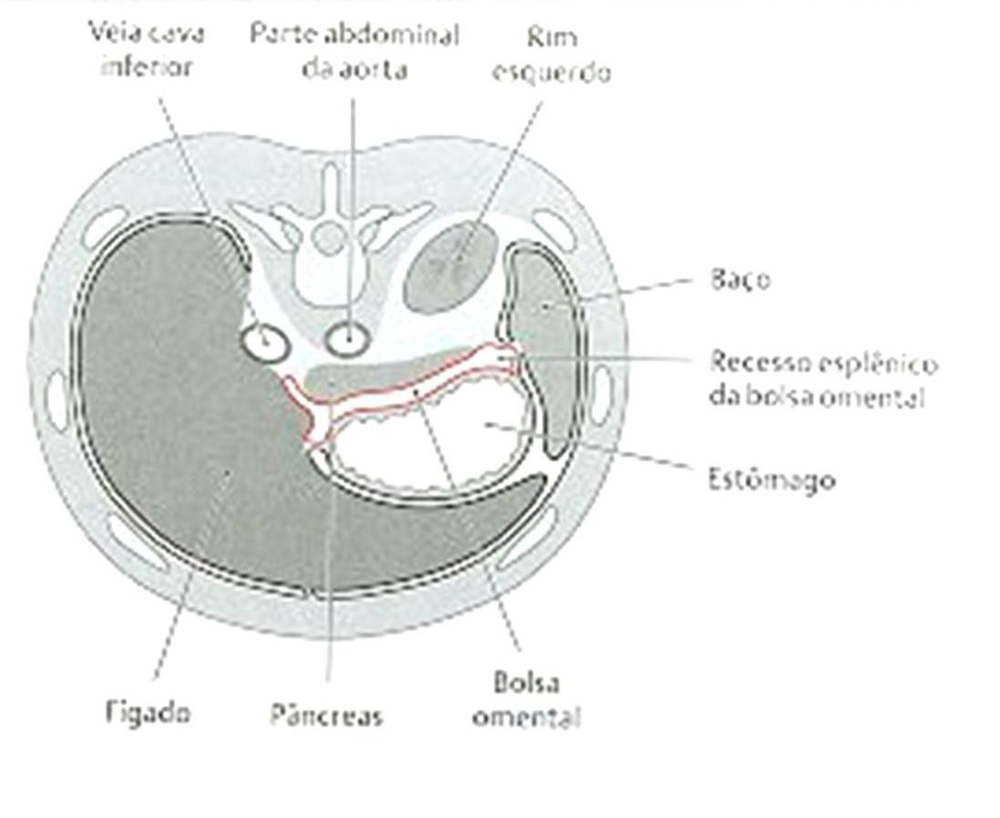
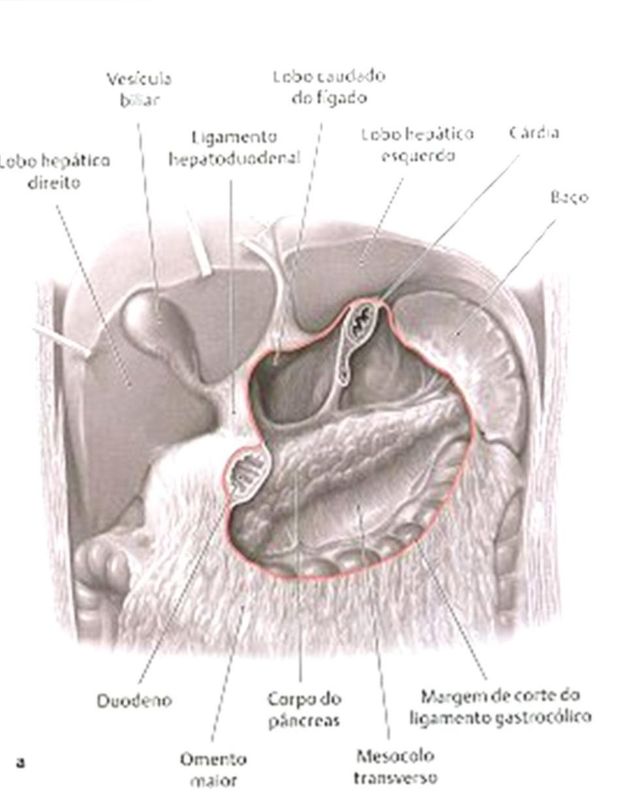
9 · Forame omental e a manobra de Pringle
- 🎯 A entrada da bolsa omental fica ATRÁS do LIGAMENTO HEPATODUODENAL: é o FORAME OMENTAL (epiploico) = FORAME (ou hiato) DE WINSLOW. (O slide escreve "Wislow"; a grafia correta é Winslow.)
Limites do forame omental (slide)
- AANTERIOR — ligamento hepatoduodenal (com o pedículo hepático).
- PPOSTERIOR — peritônio recobrindo a veia cava inferior.
- SSUPERIOR — lobo caudado do fígado.
- IINFERIOR — 1ª porção do duodeno.
Na fala, o forame foi descrito com o ligamento hepatoduodenal e a 1ª parte do duodeno "na frente" e o fígado ao redor; fique com os limites do slide, que são os da literatura.
🩺 Manobra de Pringle ("a manobra da batata")
Paciente com facada no fígado — ferimento estrelado, sangrando muito. Faz-se o PINÇAMENTO DO PEDÍCULO HEPÁTICO: como atrás do pedículo está o forame omental (aberto) e na frente também é livre, passa-se uma pá do clamp atrás e outra na frente do ligamento hepatoduodenal e fecha-se. Para de entrar sangue no fígado → dá para suturar adequadamente.
⏱️ Não pode demorar: na aula, no máximo 10–15 minutos, senão há ISQUEMIA HEPÁTICA. Quem traz mais sangue ao fígado é a VEIA PORTA (70–80% do fluxo); a artéria hepática própria traz 20–30%.
⚠️ Divergência
Tempo de Pringle: na aula, 10–15 minutos. Na literatura cirúrgica, o fígado normal tolera clampeamento contínuo por até cerca de 60 minutos (menos no fígado cirrótico/doente), e muitos serviços usam clampeamento intermitente (ex.: 15 min fechado / 5 min aberto). O princípio — tempo limitado pela isquemia — é o mesmo.
10 · Partes da bolsa omental
- Entrando pelo forame omental:
- VESTÍBULO — "vestíbulo é sempre a entrada": a parte logo após o forame.
- RECESSO SUPERIOR — sobe atrás do fígado (junto ao lobo caudado).
- RECESSO ESPLÊNICO (no slide, "gastroesplênico") — vai para a esquerda, até o baço.
- RECESSO INFERIOR (omental) — desce entre as lâminas do omento maior.
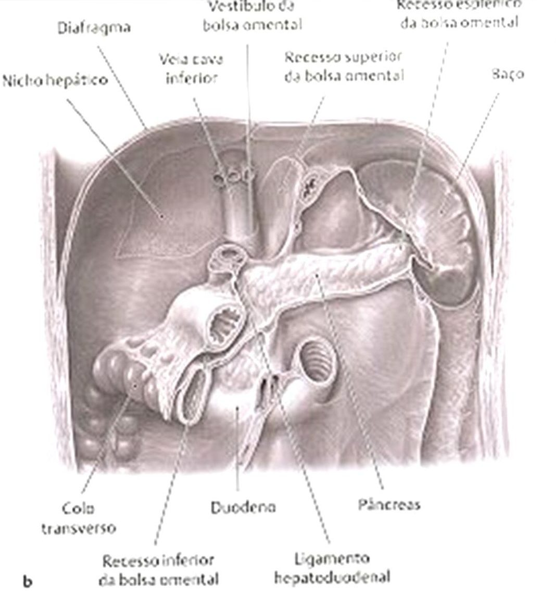
11 · Escavações do fundo da pelve
- No fundo da bacia o peritônio se reflete sobre os órgãos pélvicos (extraperitoneais) e forma escavações (recessos):
- HOMEM: ESCAVAÇÃO RETOVESICAL — entre bexiga e reto.
- MULHER: ESCAVAÇÃO VESICOUTERINA — entre bexiga e útero; e ESCAVAÇÃO RETOUTERINA — entre útero e reto (o fundo de saco de Douglas, como aparece no atlas).
- Elas se formam porque o peritônio passa à frente do terço superior do reto e por cima da bexiga e do útero — sem revesti-los por completo.
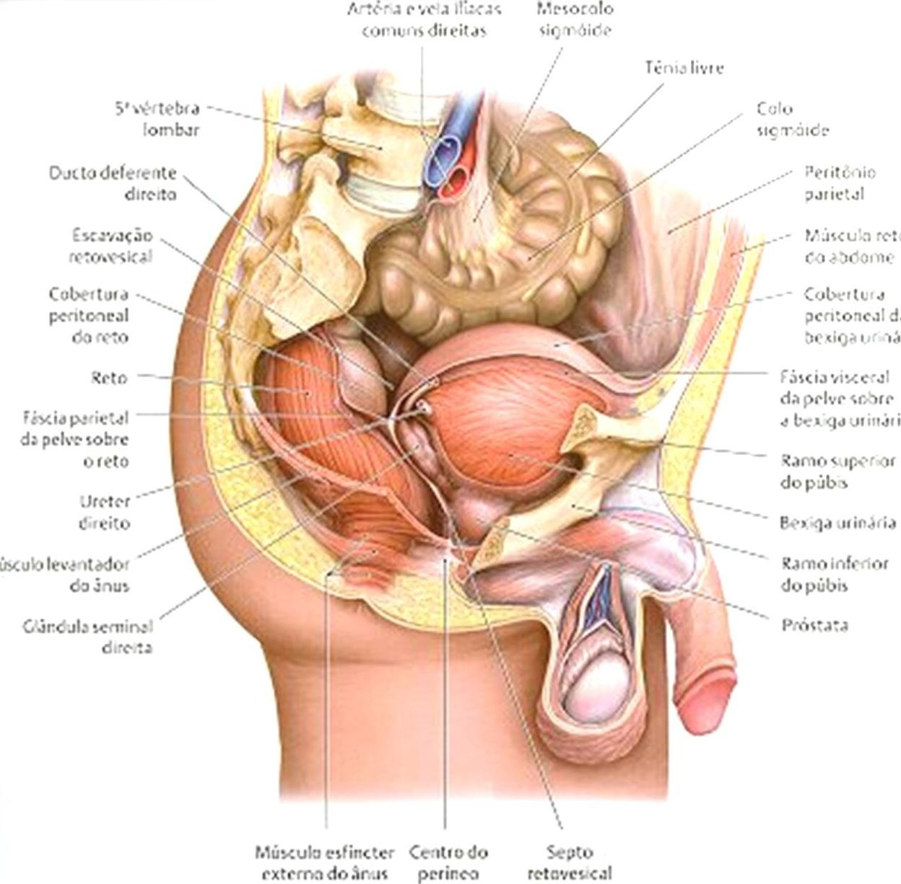
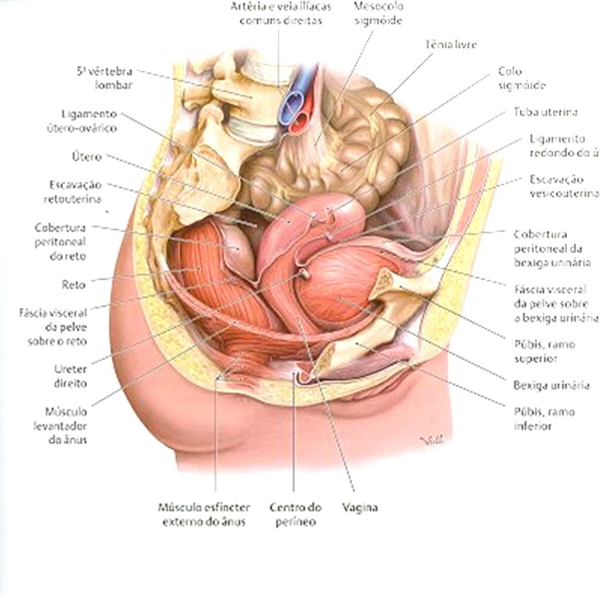
12 · Só nos slides: recessos peritoneais
só no slide A aula terminou na bolsa omental; os recessos foram anunciados como "a próxima parte" e não foram explicados. O que segue é o que os slides listam — na fala, apenas: "toda a parte intraperitoneal forma recessos nessas dobras, e todas essas regiões são passíveis de punção guiada".
| Recesso (slide) | Onde fica |
|---|---|
| Duodenais: supra, infra e retroduodenal | na altura da flexura duodenojejunal |
| Ileocecal superior | entre íleo e ceco |
| Ileocecal inferior | entre íleo, ceco e apêndice · limitado pela prega apendicular (cecal) anterior, avascular · a prega cecal posterior forma o mesentério do apêndice (vascular, contém a artéria apendicular) |
| Retrocecais | entre o ceco e a parede abdominal, no sulco paracólico |
| Intersigmoide | depressão profunda no mesossigmoide |
| Retrocólicos / paracólicos | no sulco paracólico esquerdo (entre colo descendente e parede) |
| Pélvicos | vesicouterino (bexiga–útero) · vesicorretal (bexiga–reto) |
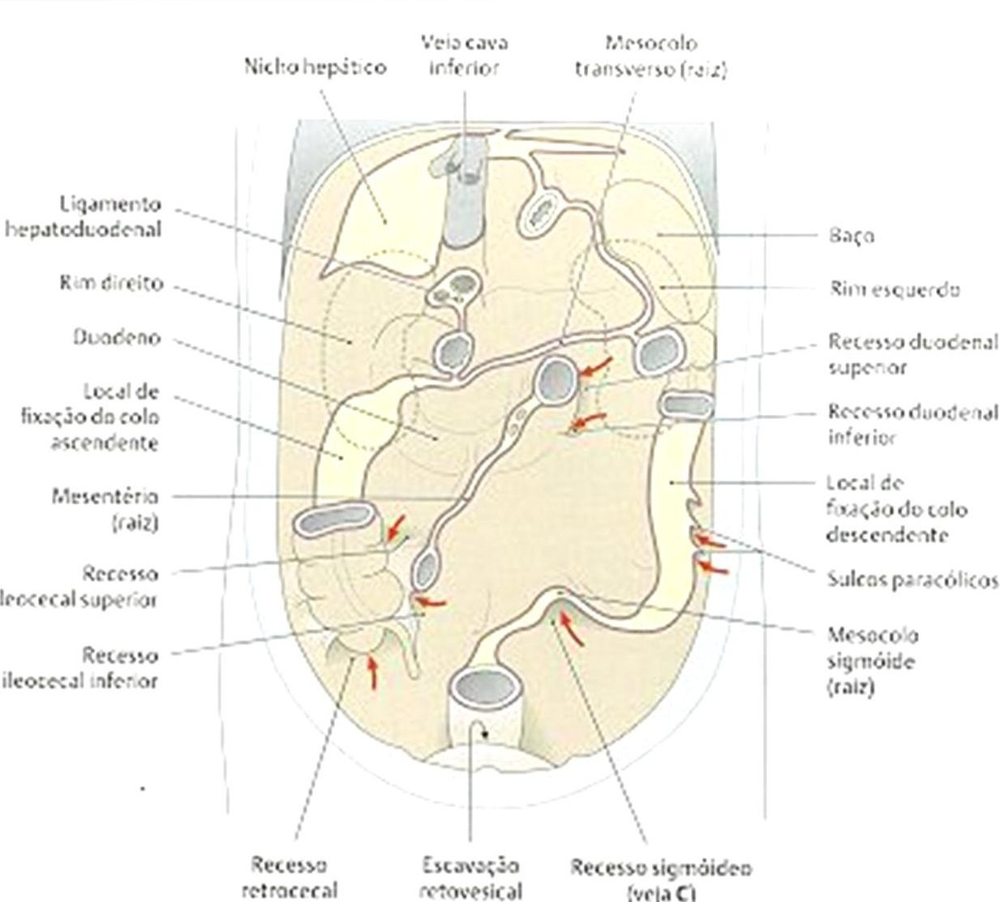
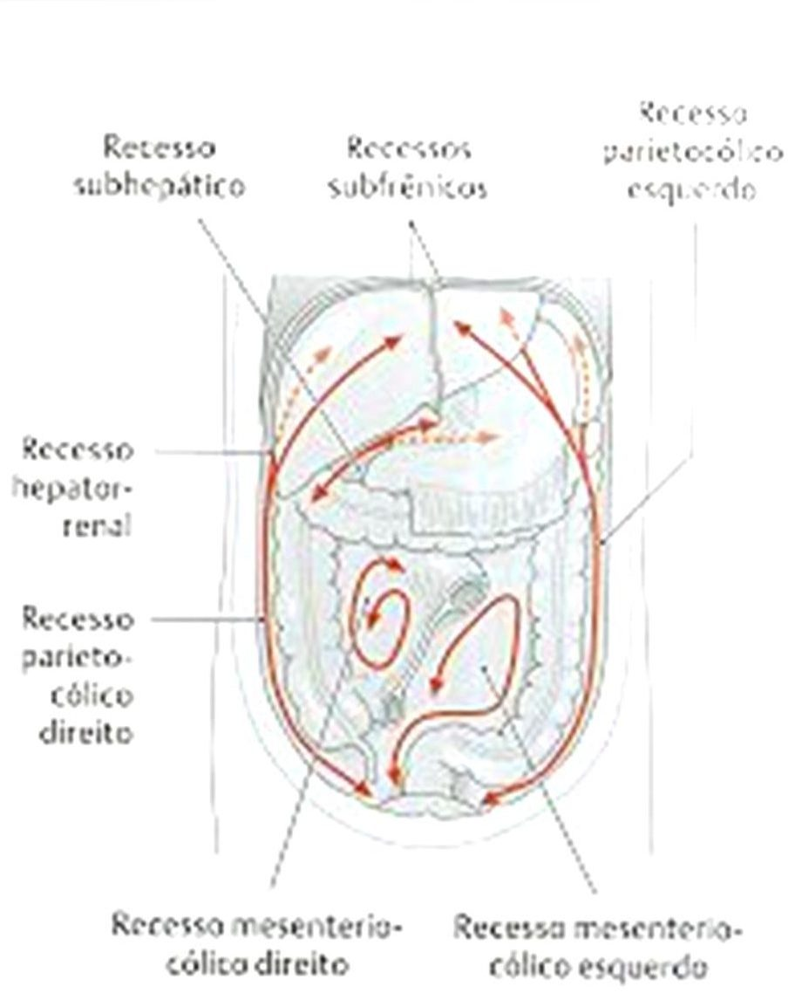
13 · Resumo rápido
- Peritônio = serosa (como pleura e pericárdio): parietal (diafragma → assoalho pélvico) + visceral (túnica externa dos órgãos); entre eles, a CAVIDADE PERITONEAL, a verdadeira cavidade do abdome.
- Grande saco: FECHADO no homem · ABERTO na mulher (tubas → útero → vagina) → mais risco de infecção.
- Peritonizados: jejuno/íleo, ceco, sigmoide, baço, cauda do pâncreas, vesícula, tuba/ovário (aula). Parciais: colos ascendente e descendente (sem face posterior), 1ª parte do duodeno, fígado (área nua), terço superior do reto. Extra: duodeno 2ª–4ª, cabeça/corpo do pâncreas, bexiga, útero, reto médio/inferior, ureteres, aorta, cava, vasos renais e ilíacos.
- Meso = parede → víscera (mesentério, mesocolo transverso, mesossigmoide, mesoapêndice; vasos entre as lâminas). Omento = víscera → víscera (menor: fígado → pequena curvatura; maior: estômago → colo transverso + parte livre).
- Ligamentos: hepatoduodenal (pedículo hepático: porta + hepática própria + colédoco) · gastrocólico · frenocólico · FALCIFORME (única prega supraumbilical; lig. redondo = veia umbilical obliterada) · pregas umbilicais mediana, mediais, laterais.
- Funções: atrito ↓ · defesa · gordura (omento maior) · bloqueio de infecção e perfuração (omento) · via de troca (DIÁLISE PERITONEAL, antibiótico) · excesso de líquido = ASCITE.
- Bolsa omental (pequeno saco, retrocavidade dos epíploos): frente = omento menor + estômago + omento maior; trás = pâncreas, cava, aorta, pilares; embaixo = colo transverso. Partes: vestíbulo, recesso superior, esplênico, inferior.
- Forame de Winslow: frente = lig. hepatoduodenal · trás = VCI · cima = lobo caudado · baixo = 1ª parte do duodeno → PRINGLE: pinçar o pedículo hepático pelo forame (aula: 10–15 min; porta = 70–80% do fluxo).
- Pelve: retovesical (homem) · vesicouterina e retouterina (mulher). Recessos duodenais, ileocecais, retrocecais, intersigmoide e paracólicos: só nos slides.
🗺️ Resumão Pré-Prova — Peritônio
Revisão da véspera · Anatomia Topográfica · aula de 16/10 · só o que foi enfatizado
- Serosa lisa e brilhante (como pleura e pericárdio) · parietal do diafragma ao assoalho pélvico · visceral = túnica externa dos órgãos.
- CAVIDADE PERITONEAL = entre parietal e visceral = a verdadeira cavidade do abdome ("não existe cavidade abdominal").
- Grande saco: FECHADO no homem · ABERTO na mulher (tubas abrem na cavidade → útero → vagina) → mais risco de infecção peritoneal.
- Abrir a cavidade: laparotomia — termo mais preciso: CELIOTOMIA (cavidade celômica).
- Peritonizados: jejuno e íleo · ceco · sigmoide · baço · cauda do pâncreas · vesícula · tuba e ovário (aula).
- Parciais: colos ascendente e descendente (medial + anterior + lateral, SEM posterior) · 1ª parte do duodeno (frente) · fígado (área nua) · terço superior do reto (peritônio na frente).
- Extraperitoneais: duodeno 2ª–4ª · cabeça e corpo do pâncreas · reto médio/inferior · bexiga · útero (peritônio passa por cima) · ureteres · aorta · VCI · vasos renais e ilíacos · vasos gonadais.
- ⚠️ Literatura: ovário coberto por epitélio próprio; útero tem perimétrio no fundo/corpo; reto médio coberto na frente; vesícula com face hepática sem peritônio.
- MESO = parede → víscera: mesentério (jejuno/íleo) · mesocolo transverso · mesossigmoide · mesoapêndice · vasos correm entre as lâminas (AMS no mesentério).
- OMENTO = víscera → víscera (epíploo): menor = fígado → pequena curvatura · maior = estômago → colo transverso + PARTE LIVRE (avental).
- Hepatoduodenal = parte densa do omento menor; contém o PEDÍCULO HEPÁTICO: veia porta + artéria hepática própria + vias biliares.
- Gastrocólico (estômago → colo; slide: flexura E) · frenocólico (diafragma → flexura E; aula: divide andar superior/inferior — ⚠️ literatura: o divisor é o mesocolo transverso).
- FALCIFORME = única prega supraumbilical, divide o fígado em lobos D/E · margem livre: LIGAMENTO REDONDO = veia umbilical obliterada · infraumbilicais: pregas mediana, mediais, laterais.
- Diminui o atrito (peristaltismo) · defesa (células no líquido) · gordura (omento maior).
- Omento maior bloqueia infecção (apendicite) e perfuração (úlcera, divertículo) → evita peritonite.
- DIÁLISE PERITONEAL: cateter, infunde solução, retira com K⁺/ureia/creatinina · também antibiótico intraperitoneal.
- Transudação → ASCITE (cirrose, esquistossomose).
- Bolsa omental = pequeno saco dentro do grande saco = retrocavidade dos epíploos, atrás do estômago.
- Frente: omento menor + estômago + omento maior · trás: pâncreas, VCI, aorta, pilares do diafragma · baixo: colo transverso · acumula líquido/sangue/pus · US/TC · punção guiada.
- Forame omental (epiploico) = de WINSLOW, atrás do lig. hepatoduodenal · limites: A lig. hepatoduodenal · P VCI · S lobo caudado · I 1ª parte do duodeno.
- Partes: vestíbulo · recesso superior · recesso esplênico · recesso inferior (omento maior).
- PRINGLE = pinçar o pedículo hepático pelo forame omental (ferimento hepático) · aula: 10–15 min (⚠️ literatura tolera até ~60 min) · porta 70–80%, artéria 20–30% do fluxo.
| Par | A diferença-chave |
|---|---|
| Meso × omento | parede → víscera × víscera → víscera |
| Omento menor × maior | fígado → pequena curvatura × estômago → colo transverso + parte livre |
| Grande saco × pequeno saco | cavidade peritoneal × bolsa omental |
| Homem × mulher | saco fechado × aberto pelas tubas |
| Colo ascendente/descendente × sigmoide/transverso | parcialmente (sem face posterior) × peritonizados com meso |
| Cabeça/corpo × cauda do pâncreas | extraperitoneais × peritonizada (junto ao baço) |
| 1ª × 2ª–4ª partes do duodeno | parcialmente revestida × extraperitoneais |
| Ligamento falciforme × redondo | a prega supraumbilical × a veia umbilical obliterada na margem livre dela |
| Forame omental: frente × trás | lig. hepatoduodenal (pedículo) × veia cava inferior |
| Fluxo hepático | veia porta 70–80% × artéria hepática própria 20–30% |
| Escavação retovesical × vesicouterina/retouterina | homem × mulher |
Banco de Questões — Peritônio
Anatomia Topográfica · aula de 16/10 · estilo ENADE/residência.